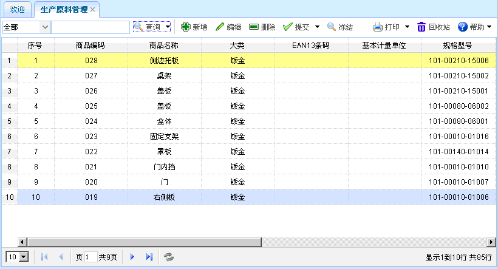
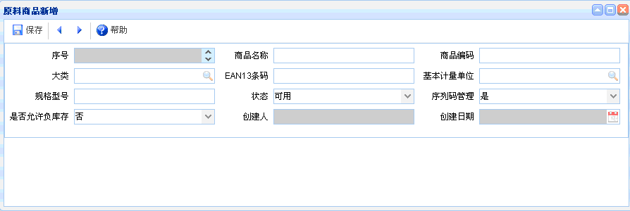
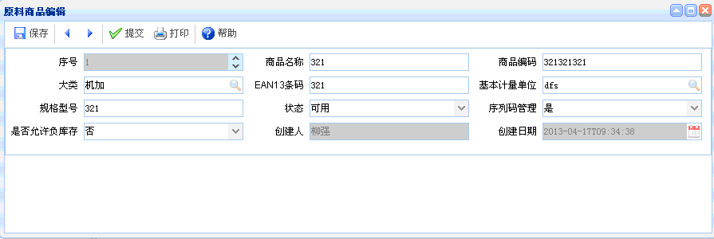

生产原料管理
生产原料管理
概述：主要是对产品原料信息进行管理。如商品名称、规格型号、大类等。
功能介绍：点击【生产原料管理】，进入生产原料管理页面，如下图所示。功能主要包括：查询、新增、编辑、删除、提交、冻结。

图表3-4-1【生产原料管理】
图表3-4-1【生产原料管理】
【查询】：通过设置查询条件，查询出符合条件的生产原料管理信息。
【新增】：点击新增按钮，如下图所示。新增完毕，点击保存。新增时，灰色文本框为默认，有搜索图案的要进行查询。商品名称和规格型号不能重复。

图表3-4-2【原料商品新增】
图表3-4-2【原料商品新增】
【编辑】：选中某项原料商品信息，点击编辑按钮后，出现如下图所示内容。进行编辑、提交操作，编辑完毕，点击左上方的保存按钮。编辑时，灰色文本框为默认，有搜索图案的要进行查询。

图表3-4-3【编辑】
图表3-4-3【编辑】
【删除】：选中某项生产原料商品信息后，点击删除，即可删除该原料商品信息，已提交的不能删除。
【提交】：选中某项生产原料商品信息后，点击提交，即可提交该原料商品信息。
【冻结】：选中某项生产原料商品信息后，点击冻结，即可冻结该原料商品信息。
 注意事项
注意事项
1、添加时，产品商品名称和规格型号不可重复。
 常见问题
常见问题
1、？
2、？
3、？